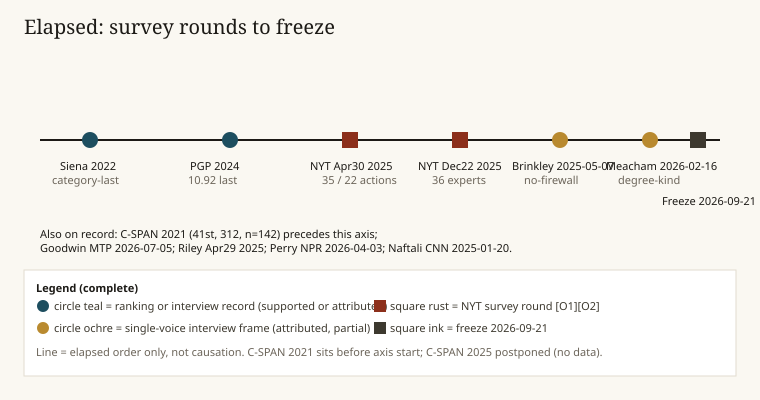
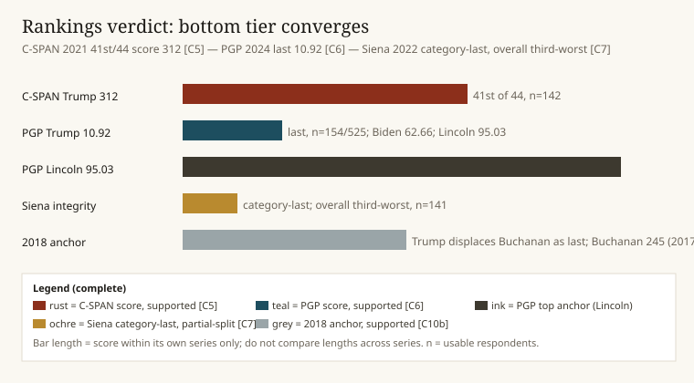
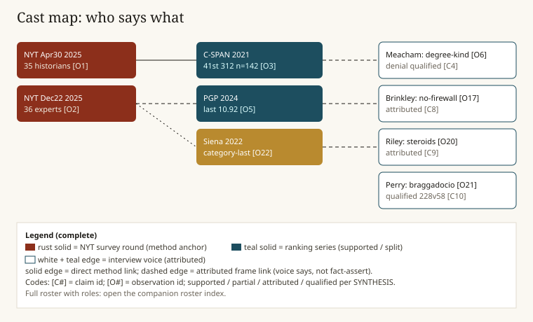

Course report — frozen record 2026-09-21
How much was truly unprecedented?
What historians said about Trump I versus Trump II, and where the record stops.
6 chaptersSources: NYT rounds, C-SPAN, PGP, Siena, transcriptsRecord: SYNTHESIS locked 2026-09-21 [C4][O1]

Elapsed order only. C-SPAN 2021 precedes the axis; C-SPAN 2025 postponed with no data [C5][O28]. Full-asset timeline above.

Scores live inside their own series only. See verdict chart asset for legend.

Voices link by attribution, not fact-assertion. Full roster in the roster index.
Historians on Trump precedent
Two survey rounds, four buckets
The NYT asked; historians refused a single verdict.
Chapter 1 of 6 · Method · Lessons: method · rankings · annex · Record [C4][O1]
Cast — who is in this chapter
| Name | Role |
|---|
| NYT editors | Round owners; Apr30 35 historians, Dec22 36 experts |
| Vaughn / Rottinghaus | Survey assists; rankings scholars |
| Bacevich, Perry, Sinha | Dec22 second-round voices |
| Burton, Engel, Genovese | Dec22 second-round voices |
| Holzer, Lichtman, Updegrove | Dec22 second-round voices |
| Widmer | Dec22 second-round voice |
- Apr30 2025 asked 35 historians about 22 actions [C4][O1].
- Dec22 2025 asked 36 experts about second-round actions [C4][O2].
- Answers split four ways; no single unprecedented verdict [C4][O1].
- Fed firing, drug boats, pardons stay NYT-asked framing only [C4][O1].
Survey asked “whether 22 Trump actions had precedent” — method line, not verdict [C4][O1]. [O1]
Historians on Trump precedent
Rankings converge at the bottom
Three series, one firm signal: bottom tier.
Chapter 2 of 6 · Rankings · Lessons: method · rankings · denial · Record [C5][O3]
Cast — who is in this chapter
| Name | Role |
|---|
| C-SPAN survey team | 2021 method owners; 142 raters, 1–10, ten traits |
| PGP team | 2024 survey; 154 usable of 525 invited |
| Siena team | 2022 survey; 141 scholars, 20 categories |
| Vaughn | Disputes Trump self-greatest claim |
| Perry | Disputes Trump self-greatest claim |
| Buchanan (anchor) | Displaced as last; 245 in 2017 |
- C-SPAN 2021: Trump 41st, score 312, n=142, 1–10 ten traits equal weight [C5][O3].
- PGP 2024: Trump last 10.92; Biden 62.66; Lincoln 95.03; 154 of 525 [C6][O5].
- Siena 2022: category-last on integrity; overall third-worst, not overall-last [C7][O22].
- 2018 anchor: Trump displaces Buchanan as last [C10b][O27].
“Each of the 10 categories is” — methodology weights traits equally [C5][O4]. [O4]
Historians on Trump precedent
Denial: degree becomes kind
Protest precedents exist; refusal does not.
Chapter 3 of 6 · Trump I · Lessons: rankings · denial · firewall · Record [C4][O6]
Cast — who is in this chapter
| Name | Role |
|---|
| Jon Meacham | Denial degree-kind voice; Fresh Air 2026-02-16 |
| Doris Kearns Goodwin | Hope-character corroboration; MTP 2026-07-05 |
| Jackson 1824 (counter) | Protest precedent via archives record |
| Nixon 1960 (counter) | Concession-telegram precedent |
| Gore 2000 (counter) | SCOTUS-accept precedent |
- No refusal-to-concede precedent; protests differ [C4][O6].
- Qualifier required: degree-kind, not absolute first [C4][O7].
- Goodwin hope-character corroborates culture-grip point [C4][O11].
“distrusting and delegitimizing elections, simply because” — Meacham [C4][O7]. [O7]
Historians on Trump precedent
No firewall: monetization frame
One historian’s frame; no second corroboration in bundle.
Chapter 4 of 6 · Trump II · Lessons: denial · firewall · frames · Record [C8][O17]
Cast — who is in this chapter
| Name | Role |
|---|
| Douglas Brinkley | No-firewall voice; Crossroads 2025-05-07 |
| Roosevelt House | Context host; Apr 9 2026 page |
| MTP editors | 2026-01-20 extreme-power video-only |
| Stay Tuned editors | 2026-02-12 theater-EOs context |
| Naftali (contrast) | Courts-no substitute voice 2025-06-04 |
- Brinkley frame only; single domain [C8][O17].
- MTP 2026-01-20 transcript absent; title description only [C8][O17].
- Cite as Brinkley-says with qualifier [C8][O18].
“There’s no real firewall between Trump’s” — Brinkley, Crossroads 2025-05-07 [C8][O18]. [O18]
Historians on Trump precedent
Steroids, braggadocio, volume
Sharp frames, each with a qualifier attached.
Chapter 5 of 6 · Rhetoric · Lessons: firewall · frames · annex · Record [C9][C10]
Cast — who is in this chapter
| Name | Role |
|---|
| Russell Riley | Steroids frame; Miller Center Apr29 2025 |
| James Perry | Braggadocio quote; NPR 2026-04-03 |
| Manisha Sinha | Felon-nominee quote; Dec22 round |
| Jeremi Suri | Unrepentant frame |
| David Greenberg | Norms-rupture voice |
| Timothy Naftali | Day-one + fear/retribution voice |
| Michael Beschloss | Category-own + legal-danger voice |
- Riley steroids: attribution only, not fact [C9][O20].
- Perry quote supported; 228v58 count qualified, no White House primary [C10][O21].
- Sinha, Suri, Greenberg, Naftali, Beschloss: single-voice frames [C9][O13].
“It is a presidency on steroids” — Riley [C9][O20]. [O20]
“like almost everything that Donald Trump” — Perry [C10][O21]. [O21]
Historians on Trump precedent
Annex: where the record stops
Unresolved items stay cited as asked-framing only.
Chapter 6 of 6 · Annex · Lessons: frames · annex · method · Record A1–A3
Cast — gaps and guards
| Name | Role |
|---|
| A1 Fed firing | Unresolved; NYT-asked framing only |
| A2 Drug-boats action | Unresolved; NYT-asked framing only |
| A3 J6 pardons | Unresolved; NYT-asked framing only |
| Beschloss long transcript | Never located; shorts substitute [O8] |
| Goodwin Morning Joe | Appearance proved; transcript absent [O31] |
| C-SPAN 2025 | Postponed; no data [O28] |
| Meacham book scope | 544pp proved; TOC absent [O34] |
- A1–A3: no fact claim; framing citation only [C4][O1].
- Siena overall-last misread refuted; category-last stands [C7][O22].
- Rice Heritage hit excluded as support [C10b][O18].
- Naftali CNN day-one primary resolved on wave-4 retry [C9][O13].
Annex rule: “cite NYT-asked framing only … with no fact claim” [C4][O1]. SYNTHESIS gaps
Reference
Glossary
Terms exactly as the frozen record uses them.
- Degree-kind [C4]
- Same type, sharply different scale; Meacham denial qualifier.
- Supported / partial / attributed / qualified
- Verification codes: fact-held, split, voice-says, count-needs-primary.
- NYT-asked framing
- Survey asked about an action; no fact claim follows (A1–A3 rule).
- C-SPAN 41st 312 [C5]
- 2021 survey; 142 raters; 1–10 across ten traits, equal weight.
- PGP last 10.92 [C6]
- 2024 survey; 154 usable of 525 invited; Biden 62.66; Lincoln 95.03.
- Siena split [C7]
- 2022 survey; category-last on integrity; overall third-worst.
- No-firewall [C8]
- Brinkley monetization frame; attributed only.
- Steroids [C9]
- Riley Miller Center frame; attributed only.
- 228v58 [C10]
- RollCall executive-order count; qualified, no White House primary.
- Annex A1–A3
- Fed firing, drug boats, J6 pardons; unresolved.